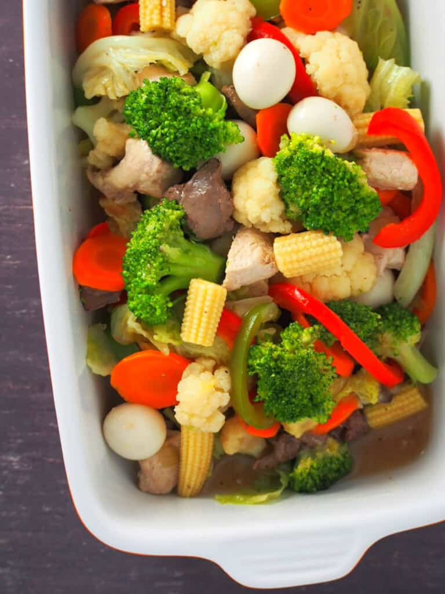

Chop Suey is a stir-fried vegetable dish that is cooked with meats such as chicken and pork. Shrimp and seafood can also be added. This chop suey recipe is special because it has almost every ingredient present. Chicken, pork, shrimp, a boiled quail eggs were all included in the recipe, along with fresh veggies.
Essentially, all recipes seem to be but a thoughtful intermingling of various ingredients. And this hopefully creates a dish dancing with flavors on your tongue. But shockingly enough, some of the most famous dishes arose from mere accidents or efforts to whip out a meal that won’t taste half bad. And if these efforts work out, we end up with something along the lines of the greatly endeared Chop Suey.